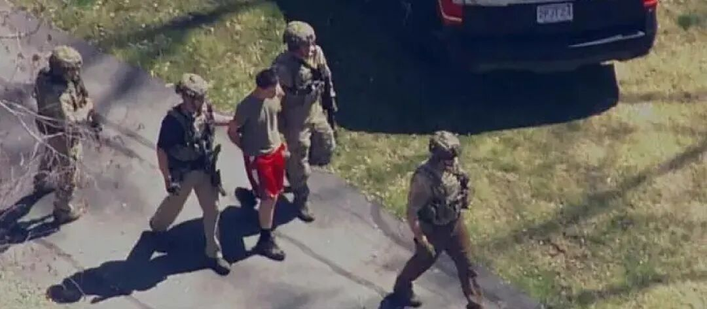

忽左忽右244｜谍海轶闻：漫谈五角大楼泄密案与美国情报外包体系


本期介绍预计阅读16分钟 今年四月，美媒又爆料一起五角大楼情报泄密事件，而造事者居然是美国国民警卫队空军一名21岁的士兵，这无疑引起了舆论对美国情报系统是否漏洞的质疑。从上世纪的水门事件到十年前斯诺登的棱镜门再到最近的风波，为何美国情报泄露事件层出不穷？美国的情报外包传统是怎么一回事？开源情报分析对全球情报机制产生了什么影响？请听本期节目沙青青的精彩分享。
内容节选
国民警卫队在美国军事组织中扮演的角色
程衍樑
特谢拉这个小伙子是国民警卫队的一个成员，他泄露机密情报带来一个问题，就是国民警卫队在美国的军事组织当中的位置，以及它和情报世界的关联。沙老师给我们听众介绍一下。
沙青青
听上去国民警卫队似乎是一个民兵式的组织，它确实有民兵的属性，或者至少在历史上曾经是民兵。实际上，现在来看它也是美国武装力量非常重要的一部分。从历史上来看，它的成立时间甚至比美国的各大军种都要早。美国在独立战争时期，是先有各个州的武装部队，再有大陆军，是这样一个先后顺序。此外，国民警卫队的组织动员程序跟普通的美国陆海空军队和海军陆战队都不太一样。原则上来说，国民警卫队隶属于各个州，各个州有直接的指挥权。
从联邦层面上说，有一个国民警卫队的总指挥部，等于是一个双重领导的架构。但是对于美国总统而言，他无法直接调动国民警卫队，而是要各个州来动员，各个州的州长是第一责任人。虽然在美国联邦层面上有一个所谓的国民警卫局，负责整体统筹相关业务，但是即便如此，经过了一战、二战和越战，包括海湾战争、阿富汗战争之后，国民警卫队已经是一支非常正规化的军事力量。首先要和大家澄清一个概念，国民警卫队不是民兵，而是美国武装部队体制当中一个重要的组成部分。
甚至在伊拉克战争期间，相当多的国民警卫队被动员到阿富汗或者伊拉克的战争一线。虽然在相当长一段时间之内，美国确实有相关法律规定国民警卫队只能用于国内，不能部署到国外去，但是随着战争的需要和美国陆军结构发生的一些变化，国民警卫队也可以成为一支赴海外作战的部队了。从这一角度而言，它并不是我们想象中的民兵，或者是简单的预备役这么一个概念，它是能够被投入实战的一支正式的武装部队。
程衍樑
但是国民警卫队并不拥有自己独立的情报局。美国的情报体系非常复杂，到今天为止应该是有 17 个还是 18 个情报机构，其中有 5 个直接隶属于军事部门。看美剧的人比较熟悉的，像海军情报局、海军陆战队情报处、隶属于国土安全部的海岸警卫队情报机构，还有陆军情报局，以及空军情报监视侦察局，但是这里面其实没有国民警卫队。
沙青青
这由国民警卫队的属性决定。因为它本质上属于州的武装，所以没有必要去承担情报侦查的功能。而且它在联邦层面的指挥部门是联邦国民警卫局，更多地负责联邦层面的协调工作。另外一点，从武器装备和战斗力层面上来说，国民警卫队可能是处于二线的状态，是一种师团。甚至美国历史上也出现过一些陆军的师的编制被改编成国民警卫队，等于是被降级了，这种案例是存在的。换句话说，国民警卫队是美国正规武装力量的一部分，但它可能不是一线的。在有必要需求的时候，现在它也可以被部署到海外。
像这次特斯拉的案例，你可以理解成他是一个美国国民警卫队驻马萨诸塞州的情报辅助单位的一个成员。至于他为什么能够获得所谓绝密情报的权限，目前美国军方没有做进一步披露。但是我们可以做个设想，可能某一个将军的幕僚要为他提供一些相关的情报支持，然后幕僚经过几层传导之后，他可能就莫名其妙地获得了一个军事相关情报的权限，得以去接触到这些信息。
从平克顿侦探事务所
一窥美国情报机构外包的历史传统
程衍樑
大家很容易产生一种想象，美国整个的情报体系现在是不是变得四面漏水。而且这种所谓的情报按说是非常重视保密，还有这么多外包的供应商。以及像这次的这个小兄弟，21 岁，他是国民警卫队的一个低阶情报人员。这里面还涉及到美国军队的一些架构，比如像国民警卫队跟美军之间的关系。我觉得今天可以来聊一聊整个美国的情报体系。
沙青青
先从所谓的外包开始讲，因为我觉得这个话题可能中国人听起来最奇怪。
程衍樑
对，在中国的语境里面，外包一般是临时工，临时工是用来顶缸的。大家觉得临时工是非常不可靠的，随时可以被扔出来。那么对于情报作业来说，怎么能用临时工？请沙老师来给大家分享一下美国情报世界所谓的外包体系，它是一个什么样的状态？
沙青青
美国情报体系当中，实际上外包的比重非常之高。我们再重申一点，本期节目谈到的话题都是来自于公开披露的新闻，没有任何非公开渠道获得的信息。我引用一个比较旧的数据，但是也能说明问题。2007 年的美国情报体系的所有的情报部门机关总预算里有 70% 付给外包。外包人员超过 7 万人，其中有四分之一的人直接参与一些核心情报业务，从中就能看出来比例有多高。同时还可以举一个相关的例子，根据 2007 年发布的一些预算相关数据，整个美国情报体系当中，40% 的情报分析业务由外包人员负责，包括像美国国家反恐中心，有超过一半的工作人员是外包的，这类人员来自于私人企业。
另外一点，根据 2010 年的相关的调查，也显示出全美有 2000 多家公司，分布在 1 万多个美国境内或境外的据点，承担着反恐国土安全情报，包括相关情报外延工作。这一批人员比我们前面提到的美国情报体系直接的雇佣人员还要庞大，超过 26 万人，而体制内的美国情报体系编制人员其实也不过 10 万人出头而已。从这几个数据能看出，情报外包对美国情报体系而言是多么地重要，甚至是半壁江山都不为过。
程衍樑
对，可以说美国首都华盛顿以及它西南边的五角大楼驻地阿灵顿，以之为中心辐射出一个巨大的情报产业，这个情报产业就是因他们而生的。那我们刚刚说到的大几十万人，他们工作生活在这样的一个产业链路当中。
沙青青
对，这个体系从中国人角度来看会觉得很奇怪，这么一些很核心的国家机密，怎么都是私营机构、外包企业？但我觉得还是要放到美国的历史语境来看待这个问题。因为美国的兴起和发展，本身就是私营企业或者私营资本驱动的。这样一个国家和社会，远的不去讲，我们讲 19 世纪美国在搞西部大开发的时候，当时美国政府的力量非常薄弱，很多联邦境内的执法，或者南北战争期间的情报活动、间谍活动，都是外包给私人来做的。
最典型的例子就是平克顿侦探事务所，如果你玩过荒野大镖客这个游戏，你会对这个机构印象非常深。历史上，平克顿就是属于美国最早的情报外包王牌或者是佼佼者。它就是一个纯私人的企业机构，为美国联邦政府效力，哪怕是在美国联邦政府的南北内战期间，它也会扮演一些间谍情报上的工作。然后在和平时代，对内的事务，类似缉凶、悬赏抓逃犯，也是平克顿的业务范围。
程衍樑
而且看西部片的人很熟悉，就是你到一个小镇上通常遇到一个警长，但这个人你用中国人的眼光去看，很容易产生一个怀疑，这不是公务员吗？但其实他跟我们说的公务员这套体系是很不一样的，他有点民选的概念。
沙青青
所以，这套体系对美国人来说是非常天然的，历史上就是这么玩的。
程衍樑
是的。而且说到情报的承包商，我们其实一般在讨论它其中的某个类型，也就是所谓的核心人才知识的承包商，这个承包商为雇主提供了情报搜集以及情报分析的工作，比如说斯诺登做的那样。实际上，在情报世界的这些承包商也是五花八门的，大体上可以把它分成几类。有一类是所谓的硬件服务商，比如向五角大楼提供卫星、计算机，但可能它不涉及到一些人员具体的提供。还有一类可能提供商品属性的价值比较低的服务，它的秘密等级也相应地应该很低，比如提供食品、安保，这是辅助类的服务承包商。第三类才是我们刚刚说到的，以提供人才为主，这类私人承包商他们接触的信息等级也是带有一定程度的密集的，比如著名的兰德公司、通用动力，包括在中国也耳熟能详的埃森哲之类的咨询公司，他们跟美国情报界也有大量的合作，他们的合作更多聚焦在这部分上。
沙青青
前面提到一些硬件提供方面比较有名的厂商，比如冷战期间，CIA 曾经找过洛克希德-马丁生产 U2 高空侦察机，还有一些卫星的侦察计划。因为这些东西除了本身是武器制造商之外，还涉及到情报收集的一些方式方法，所以它需要高度介入。当时洛克希德-马丁其实做了很多配合工作，除了生产武器装备和飞机之外，哪怕是它的飞机如何采集情报？照片如何解析？摄影摄像出来的影像如何做分析？实际上也要高度参与到其中。
美国情报外包的极限套娃和成瘾性运用
程衍樑
我们如果从现实角度去看，私营企业尤其在情报外包领域还是极具竞争力的。对美国来说，这种私营公司介入到情报网络承包的状况，短期内可能是不太会被改变。那么从安全性的角度，它到底安不安全？这能不能让沙老师给我们来讲一讲？
沙青青
实际上，按照美国的相关规范要求，如果你是涉密的工作人员，不管你是私营机构的还是体制内有编制的公务人员，你都要经过同样的安全背景调查。这些调查原则上来说，至少以前有可能是由 FBI 来做一些相关的政治调查。但是这一情况在最近这二三十年也有一些改变，出现了一个非常滑稽的情况，就是做这种秘密背景调查的政审也是外包给私营公司来做。你发现这就变成一个套娃的事情了。对于很多政府机关而言，尤其是美国公家情报部，有一种使用上瘾的感觉，以至于很难戒断。你前面提到的一点，私营公司的效率足够高，因为他们完全是按照商业逻辑在运作的这样一套体系。
而且另外一点，对美国政府来说，外包能够起到防火墙的作用。这也解释了为什么在阿富汗战争期间，在反恐战争期间，除了情报外包之外，它会使用所谓的私营军事外包商来做一些特种军事行动。很多事情出于美国国内相关法律规制，不方便直接参与，但是如果通过一个外包商来做，在法律层面上可以杜绝这个事情。我就是找个人来帮我顶这个锅的。同时，一旦出现什么问题，会有一个非常好的渠道，能够做一个防火墙式的隔绝，法律上面能够获得一个比较安全的状态，类似这种在当时黑水公司的事情上体现得特别明显。
在情报领域其实也是这样的，因为涉及到一些灰色地带的监控和监听。这些问题我们在以前的相关节目里也提过，至少在美国国内的相关法律上来说，尤其对美国境内的美国国民的监听和监控，有非常严格的法律程序要做。但这套东西对于很多情报机构来说，法律程序会拖慢效率，所以就一股脑地外包出去。
程衍樑
这个逻辑有点像当年英国、荷兰做东印度公司那样，以一个公司的形态去开展海外业务，但反过来说，他们跟政府的关联又是非常深的，你不能真的把他们当成一个独立的商业公司来看。而且涉及到美国情报外包的规模，在 9·11 事件之后，现在大规模招募承包商基本成了一种常态的，成瘾性的，难以戒断的形式了。而且我看过一个数据，90% 的美国国防和情报外包业务被大概 110 家大企业垄断，其中就包括当年斯诺登的东家博思艾伦，前面提过的通用动力这样的一些商业巨头，还有像沙老师提过的那些十几年前的数据，有 4 万个私营情报承包商，雇佣了 26.5 万名情报系统人员。
在国安局驻地米德堡也有情报外包制度，方圆 10 英里内，有大概 250 家以上的私营企业提供大量业务合作。比如博思艾伦十年前的数据，从 2010 年到 2012 年，博思艾伦的财务报表里面，三年分别是 98%、97%、98% 的收入占比来自于美国政府部门提供的外包服务。这些公司好像一个特点，它只服于美国政府本身，好像跟以色列的情报机构有个不太一样的地方。这到底是因为美国的业务足够大，还是因为这些美国私营公司的国别属性更强一点？
*沙青青*
两者应该都有。美国的情报业务实际上就是全球的情报业务。一个是市场足够大，盘子足够大。另外，就是它的国别属性特别强。而且尤其这两年政治环境之下，大家不言而喻，也都可以理解。而且再者，实际上面我们可以看到美国整个一套情报外包体系逐步产业化，或者是越来越大，以至于难以戒断的状态，还是应该从 90 年代克林顿时代开始说起。
因为克林顿时代有个很有名的政策口号，就是冷战后从军事研发拿出来的每一分钱都应该用于商业技术的研发。一方面，情报机构被大量裁员，导致不得不仰赖这种体制外的私营机构来给予他一些相关的力量，仰仗他们的心理力量。这一套东西即便经过了 9·11 事件之后有所改变，情报的一些预算可能会提高了，国防预算在每年在增加，在恢复，你会发现虽然像 CIA、NSA 这些机构它开始重新扩编招人，但它的扩编速度远远赶不上同样的私营机构的扩张速度，两者之间甚至是不成比例地在增长。
而且在奥巴马政府时期，奥巴马对核心的情报业务外包相对来说有一些保守。但是在特朗普上台之后，这一套东西又被推倒重来了，因为当时特朗普直接要求联邦政府机关应该采取人事精简的策略，并宣布他会持续削减人事的相关预算。这套东西实际上也导致了改弦更张，不借助外包的可能性变低。更何况特朗普本人非常希望能够撇开原有的所谓的深层政府（Deep State），他要重建自己的系统，这种东西改不了。
之后的拜登其实也面临一个很大的问题。虽然我们看到这些年美国的一些军事预算创新高，但实际上压在美国政府财政上面有两个大包袱。第一个是新冠疫情的预算压力很大，第二个是他这两年应对某些国家的一些军事上的预算也增加了很多。真正能够分到情报的预算，某种程度来说可能未必变多了，甚至有可能变少了。以至于相关的一些体制内的机构，尤其在人员上的扩张难度变得越来越高，所以还是不得不去仰赖一些外部的服务商来提供相关支持。在短期内，我觉得这一套东西不会改变，还会持续下去。
本期嘉宾沙青青（微信公众号：13号埋立地）
本期提到 美国国民警卫队 / 爱德华-斯诺登 / 美国有线电视新闻网(CNN) / 摩萨德 / 瓦格纳集团 / 切尔西-曼宁 / 维基解密 / 兰德公司 / 埃森哲 / 洛克希德-马丁公司 / 美国中央情报局(CIA) / 美国电话电报公司(AT&T) / 阿拉伯国家联盟 / 美国国家安全局(NSA) / 詹姆斯-沃尔西 / 棱镜计划 / 美国捷蓝航空公司 / 帕兰提尔科技公司 / 黑水公司 / 埃里克-普林斯 / 康拉德-阿登纳 / 盖伦组织 / 博思艾伦咨询公司 / 通用动力公司 / 米德堡 / 苏珊-柯林斯 / 水门事件/ 理查德-米尔豪斯-尼克松 / 响铃猫(Bellingcat) / 诺曼底登陆 / 平克顿保安公司 / 伯恩斯国际服务公司 / Securitas AB👂🏻 文稿、排版：安琪编辑：hualun
谍海轶闻 | 美国情报界眼中的9·11与猎杀拉登之路
谍海轶闻｜广播攻势与舆论渗透：冷战中的宣传战